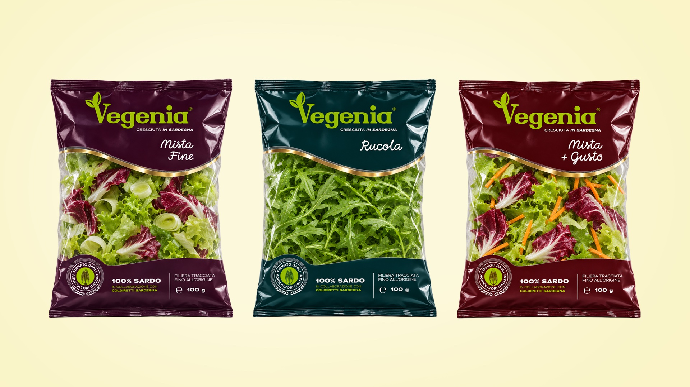
01 · IL PRODOTTO
Classic Premium
La qualità del prodotto, in primo piano.
Tre direzioni creative per la busta delle insalate Vegenia: Mista Fine, Mista + Gusto, Rucola.
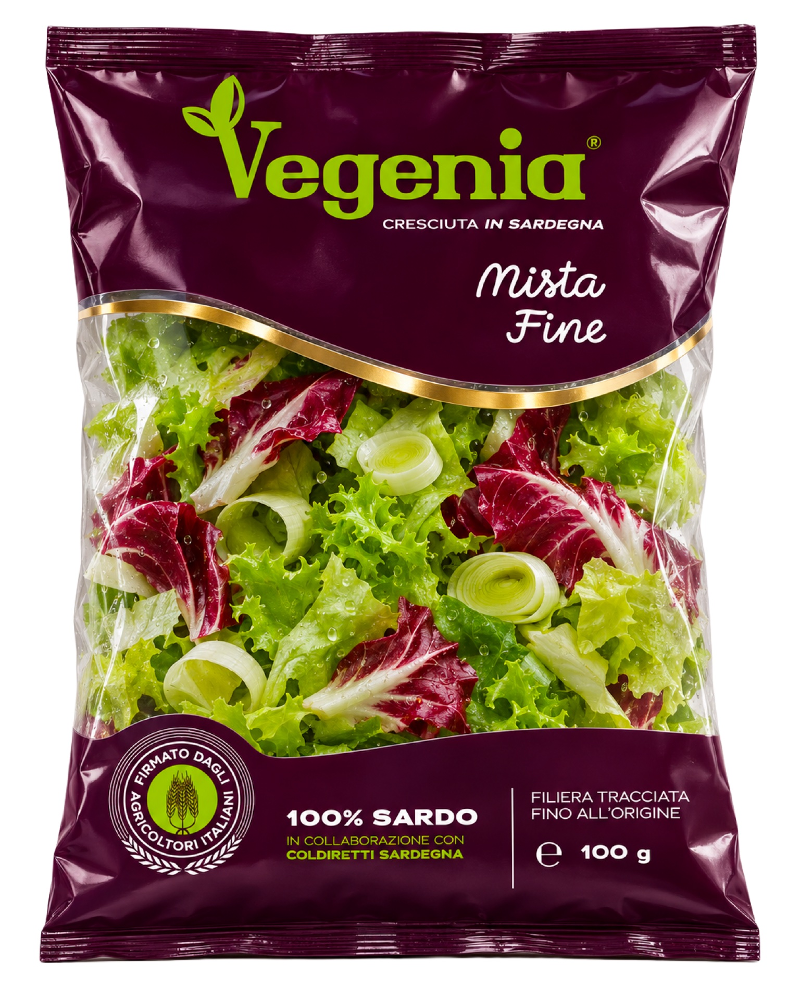
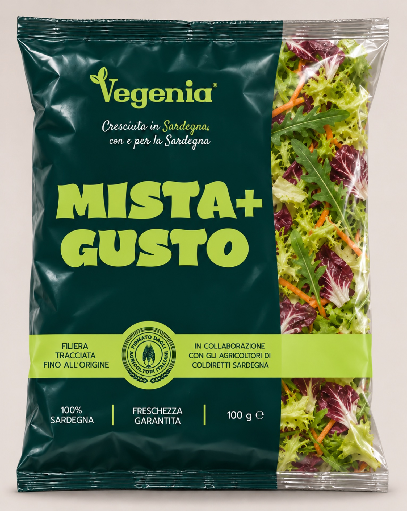
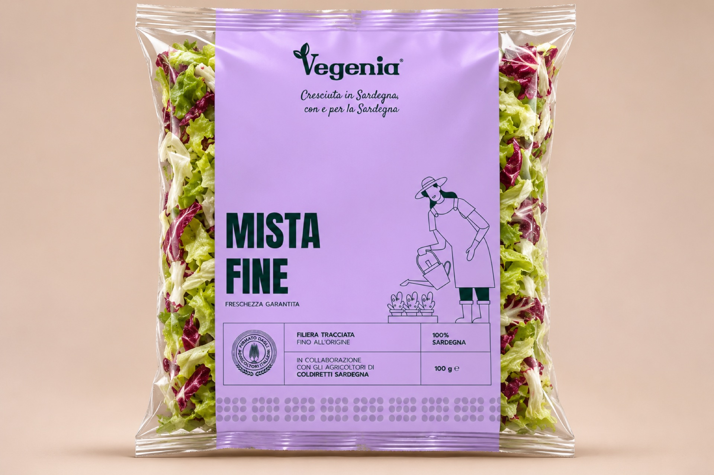

La qualità del prodotto, in primo piano.
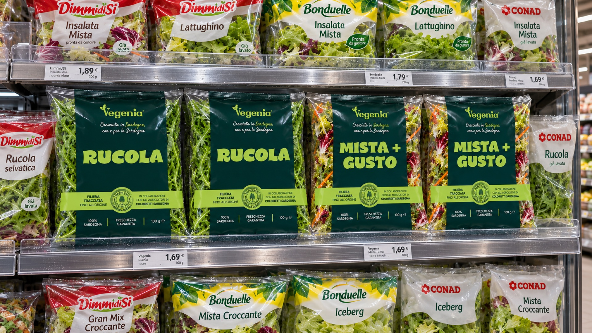
Una marca forte, immediata e riconoscibile.
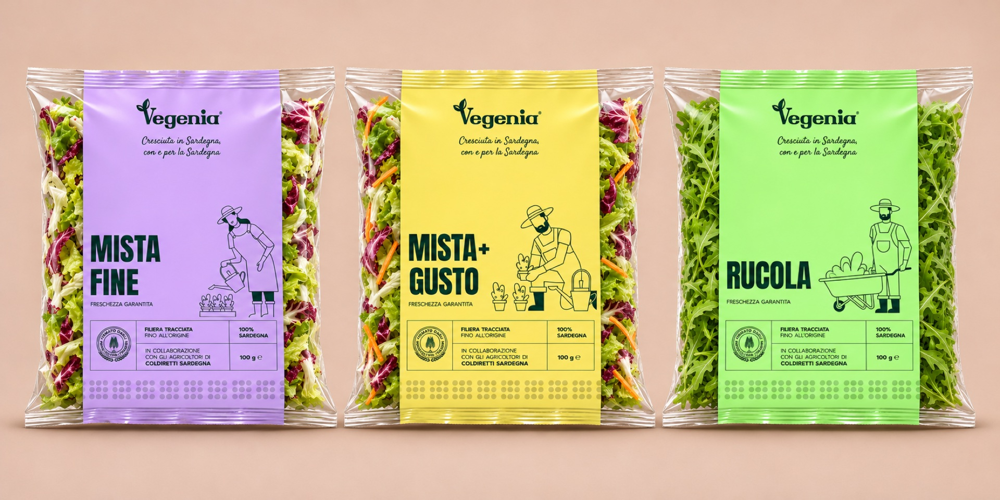
Il valore delle persone, la cura della terra.
La qualità del prodotto, in primo piano.
Una rilettura dei codici della tradizione gastronomica, orientata all’eleganza e alla valorizzazione della qualità del prodotto.
Borgogna, verde petrolio e rosso rubino identificano le referenze. Il dettaglio dorato, la tipografia calligrafica e la grande finestra centrale definiscono una composizione ricercata.
Il logo protagonista, l’origine sarda e la tracciabilità costruiscono un racconto di provenienza e qualità, mentre la trasparenza valorizza direttamente il contenuto.
Ogni referenza ha il suo colore, sempre scuro e saturo come nel mondo del vino e della gastronomia. L’onda dorata separa la marca dal prodotto e il verde del logo richiama le foglie.
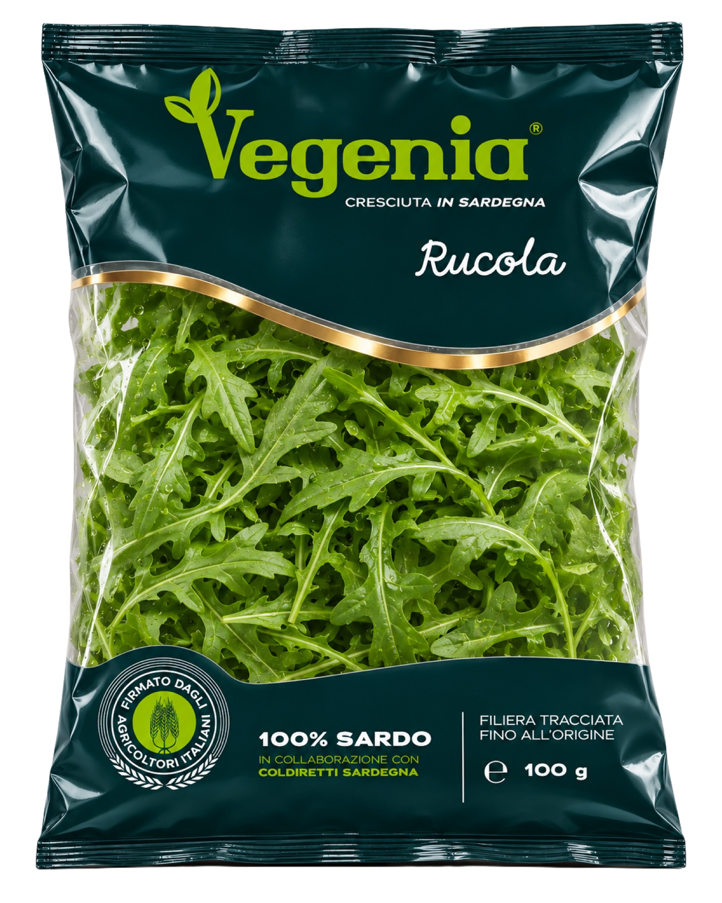
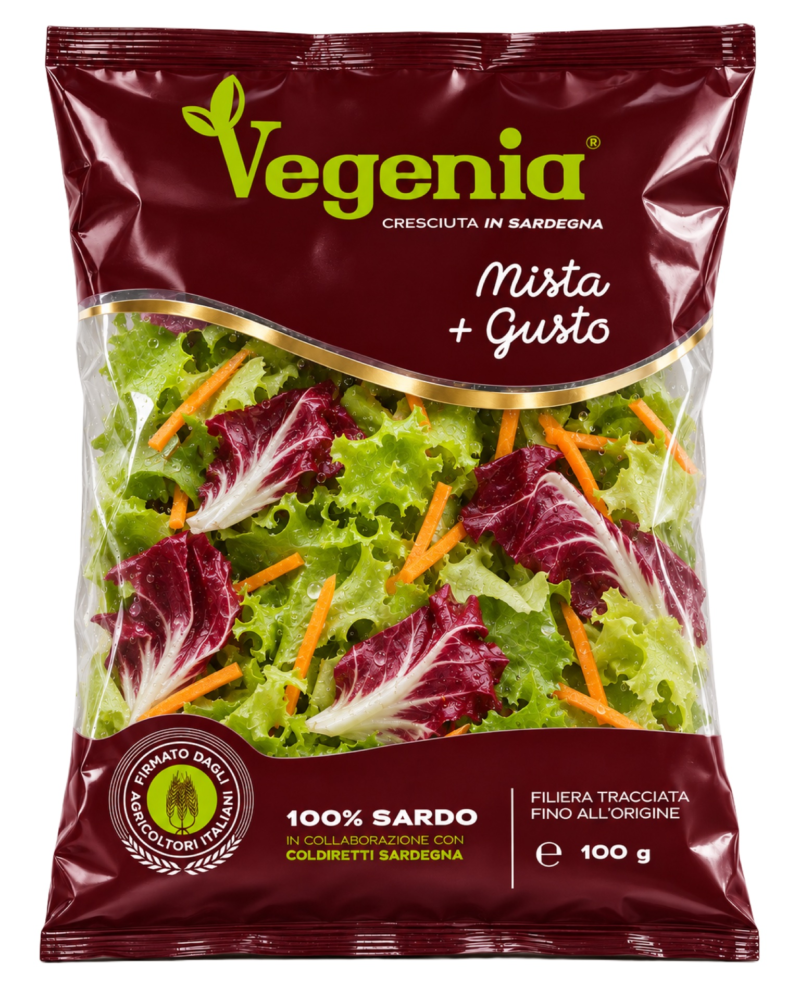
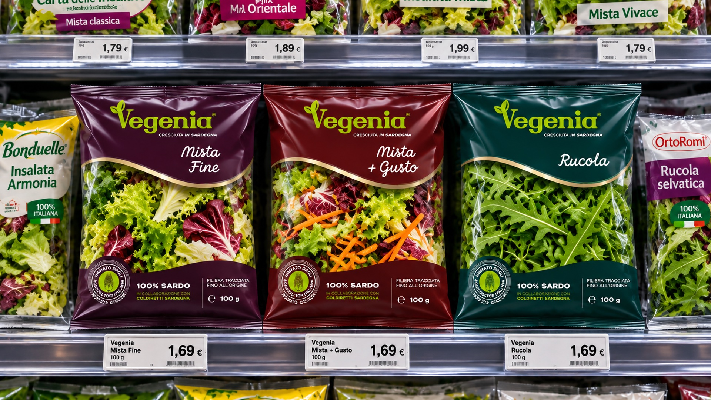
I fondi scuri incorniciano la finestra e fanno risaltare il verde e il rosso delle foglie. È la busta che più somiglia a un prodotto di gastronomia.
Una marca forte, immediata e riconoscibile.
Una lettura espressiva del premium, fondata sulla presenza del marchio e sulla chiarezza della comunicazione.
Verde profondo e lime, lettering organico di grande formato e finestra laterale. La fascia orizzontale mette in evidenza la filiera e la collaborazione con gli agricoltori.
Un sistema compatto e coerente che esprime energia, freschezza e autorevolezza attraverso un codice cromatico istituzionale.
Il verde profondo è il fondo di ogni referenza e il lime porta nome del prodotto, payoff e fascia della filiera. A distinguere le insalate sono il lettering e quello che si vede dalla finestra.
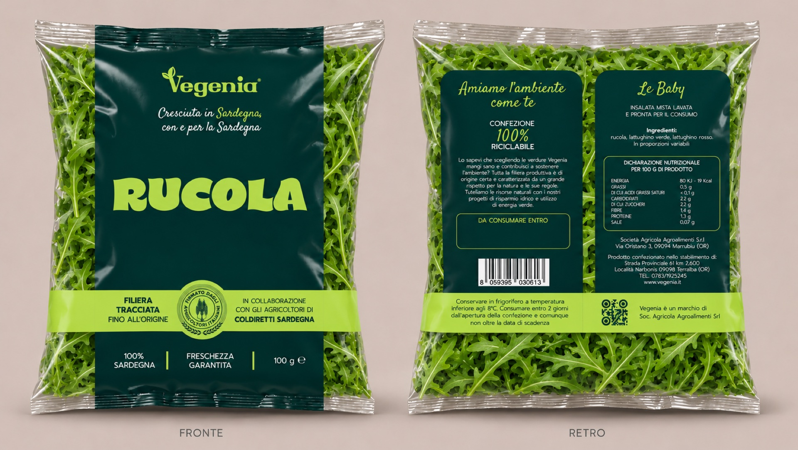
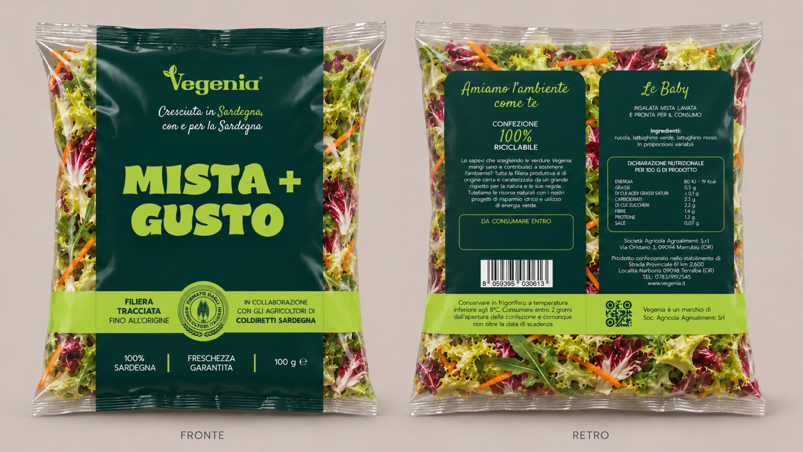
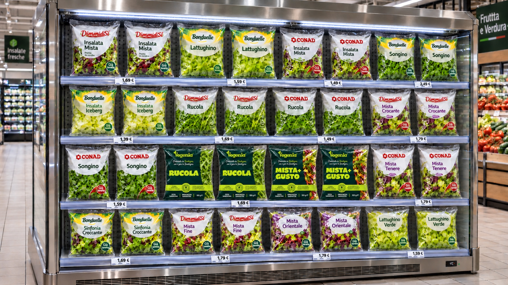
In mezzo a buste chiare e trasparenti, il verde profondo si legge come una macchia unica anche da lontano. Più facce affiancate costruiscono un blocco di marca.
Il valore delle persone, la cura della terra.
Un’identità premium contemporanea che racconta il legame tra prodotto, persone e territorio. I gesti della coltivazione diventano espressione della cura e del valore del lavoro agricolo.
Palette luminosa differenziata per referenza, tipografia condensata e illustrazioni monocromatiche. La fascia centrale dialoga con le finestre laterali e con la freschezza delle foglie.
Un universo illustrativo originale, da sviluppare a partire dai personaggi provvisori dei mockup, capace di raccontare la filiera sarda anche oltre il packaging.
Tre fondi pastello, luminosi e piatti, distinguono le insalate a colpo d’occhio. Il disegno e i testi restano in un solo verde scurissimo: la famiglia si riconosce dalla costruzione, la referenza dal colore.
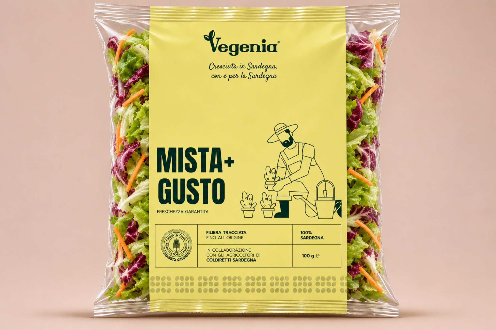
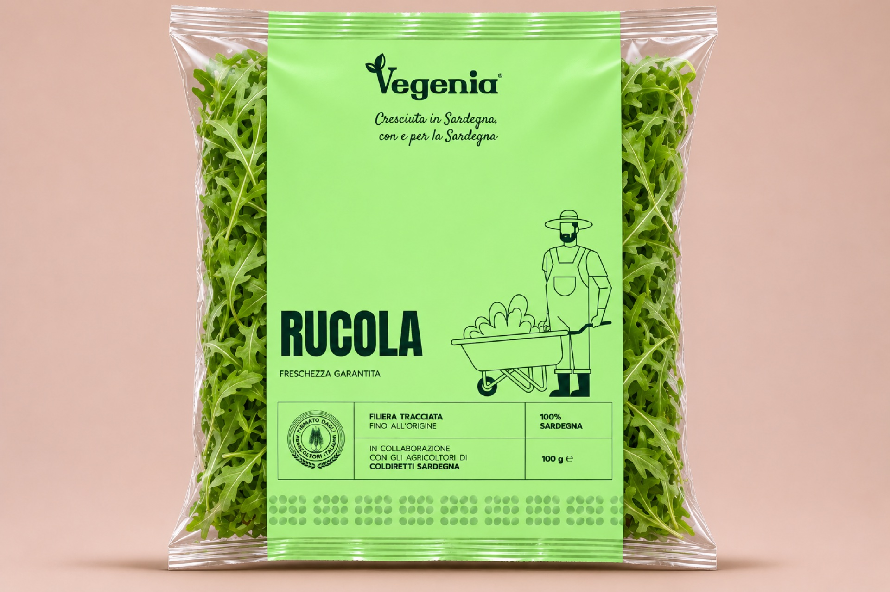
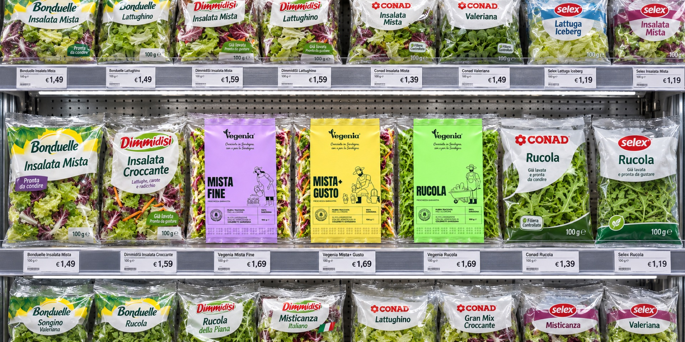
Accanto alla concorrenza, quasi tutta su fondo bianco con marchi rossi e gialli, i tre pastello formano una fascia compatta. Le persone disegnate sono l’unico volto umano dello scaffale.
| 01Classic Premium |
02Bold Premium |
03Human Premium |
|
|---|---|---|---|
| Il premium è | L’eleganza della tradizione gastronomica | La presenza e l’autorevolezza della marca | La cura e il valore del lavoro agricolo |
| Protagonista | Il prodotto, attraverso la finestra | Il marchio e il nome del prodotto | Le persone e i gesti della coltivazione |
| Colore | Borgogna, verde petrolio e rubino, con dettaglio oro | Verde profondo e lime, uguali per tutta la linea | Pastello luminoso, uno per referenza |
| Tipografia | Calligrafica | Lettering organico di grande formato | Condensata |
| Finestra | Grande finestra centrale | Una finestra laterale | Due finestre laterali ai lati della fascia |
| Segno distintivo | Onda dorata tra marca e prodotto | Fascia lime su filiera e agricoltori | Illustrazioni monocromatiche dei personaggi |
Le tre buste sono tutte premium, ma lo dicono con codici diversi: più classici o più contemporanei, con più spazio al prodotto o alla grafica.
digitaldrop.eu